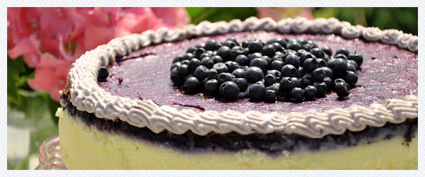

Sernik jagodowy
Składniki
- 1 kg białego sera ( trzykrotnie zmielonego lub gotowego "na serniki")
- 250 g serka mascarpone
- 100 g miękkiego masła
- 5 jajek
- łyżeczka esencji waniliowej
- półtorej szklanki cukru
- 3 łyżki mąki ziemniaczanej
- szklanka jagód

Ustawić piekarnik na 170 st. Na jego spodzie ustawić dużą blaszkę z gorącą wodą. W ten sposób sernik będzie się piekł w czymś w rodzaju "łaźni parowej", będzie równy i bardziej puszysty.
Masło rozetrzeć płaską końcówka miksera, dodać sery, esencję waniliową, jajka, mąkę, cukier (cztery łyżki zostawić do jagód). Zmiksować wszystko na jednolitą masę. Jagody zblendować osobno z odłożonym cukrem, dodać do nich pięć łyżek sernikowej, białej masy, dobrze wymieszać. Dno tortownicy wysmarować masłem, posypać tartą bułką, boków nie smarować. Wylać na nią białą masę serową, delikatnie zalać jagodową częścią. Wstawić na godzinę do rozgrzanego piekarnika. Ciasto zostawić tam do ostygnięcia, po czym odłożyć na kilka godzin do lodówki. Okroić brzeg wzdłuż tortownicy nożem. Udekorować wedle uznania, jagodami, bitą śmietaną , ew. posypać okruszkami chałwy.
Masło rozetrzeć płaską końcówka miksera, dodać sery, esencję waniliową, jajka, mąkę, cukier (cztery łyżki zostawić do jagód). Zmiksować wszystko na jednolitą masę. Jagody zblendować osobno z odłożonym cukrem, dodać do nich pięć łyżek sernikowej, białej masy, dobrze wymieszać. Dno tortownicy wysmarować masłem, posypać tartą bułką, boków nie smarować. Wylać na nią białą masę serową, delikatnie zalać jagodową częścią. Wstawić na godzinę do rozgrzanego piekarnika. Ciasto zostawić tam do ostygnięcia, po czym odłożyć na kilka godzin do lodówki. Okroić brzeg wzdłuż tortownicy nożem. Udekorować wedle uznania, jagodami, bitą śmietaną , ew. posypać okruszkami chałwy.